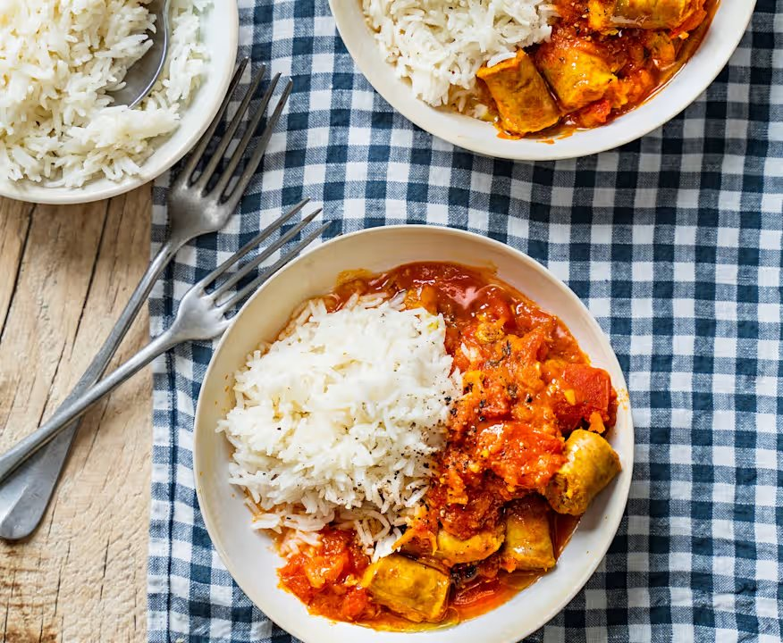

Rougail saucisse et riz
Ingrédients
4×
- 500 g de saucisses fumées précuites
- 1 l d'eau
- 10 g de gingembre frais
- 200 g d'oignons
- 2 gousses d'ail
- 2 c. à s. d'huile d'olive
- 5 tomates
- 60 g de concentré de tomate
- 1 c. à s. de sucre
- 1 c. à s. de curcuma
- 3 brins de thym
- 1 pincée de piment
- 250 g de riz basmati
- poivre
- sel

Préparation
Étape 1
Mettre 500 g de saucisses fumées précuites dans le panier et 1 l d'eau dans le bol. Cuire 12 min/Varoma/vitesse 4. Vider le bol.
Étape 2
Mixer 10 g de gingembre frais, 200 g d'oignons et 2 gousses d'ail 5 sec/vitesse 5. Ajouter 2 c. à s. d'huile d'olive et rissoler 5 min/120ºC/vitesse 1.
Pendant ce temps, couper les saucisses en tronçons de 3 cm.
Étape 3
Ajouter 5 tomates (550g) et 60 g de concentré de tomate, mixer 3 sec/vitesse 5.
Étape 4
Insérer le fouet. Ajouter 1 c. à s. de sucre, 1 c. à s. de curcuma, 3 brins de thym effeuillés, 1 pincée de piment et les saucisses. Cuire 15 min/100ºC/sens inverse/vitesse mijotage.
Pendant ce temps, cuire 250 g de riz basmati à l’eau bouillante salée.
Étape 5
Assaisonner de poivre et de sel, servir avec le riz.
Résumé
500 g de saucisses fumées précuites
1 l d'eau
Cuire 12 min/Varoma/vitesse 4
10 g de gingembre frais
200 g d'oignons
2 gousses d'ail
2 c. à s. d'huile d'olive
Mixer 5 sec/vitesse 5 rissoler 5 min/120ºC/vitesse 1
couper
5 tomates
60 g de concentré de tomate
mixer 3 sec/vitesse 5
1 c. à s. de sucre
1 c. à s. de curcuma
3 brins de thym
1 pincée de piment
Cuire 15 min/100ºC/sens inverse/vitesse mijotage
250 g de riz basmati
poivre
sel
cuire